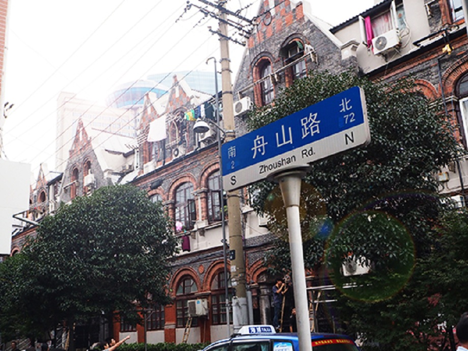
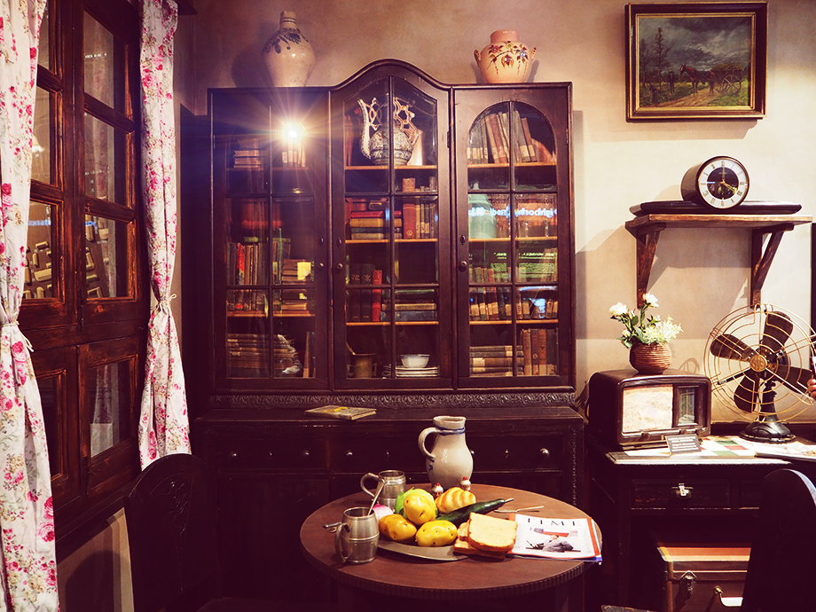
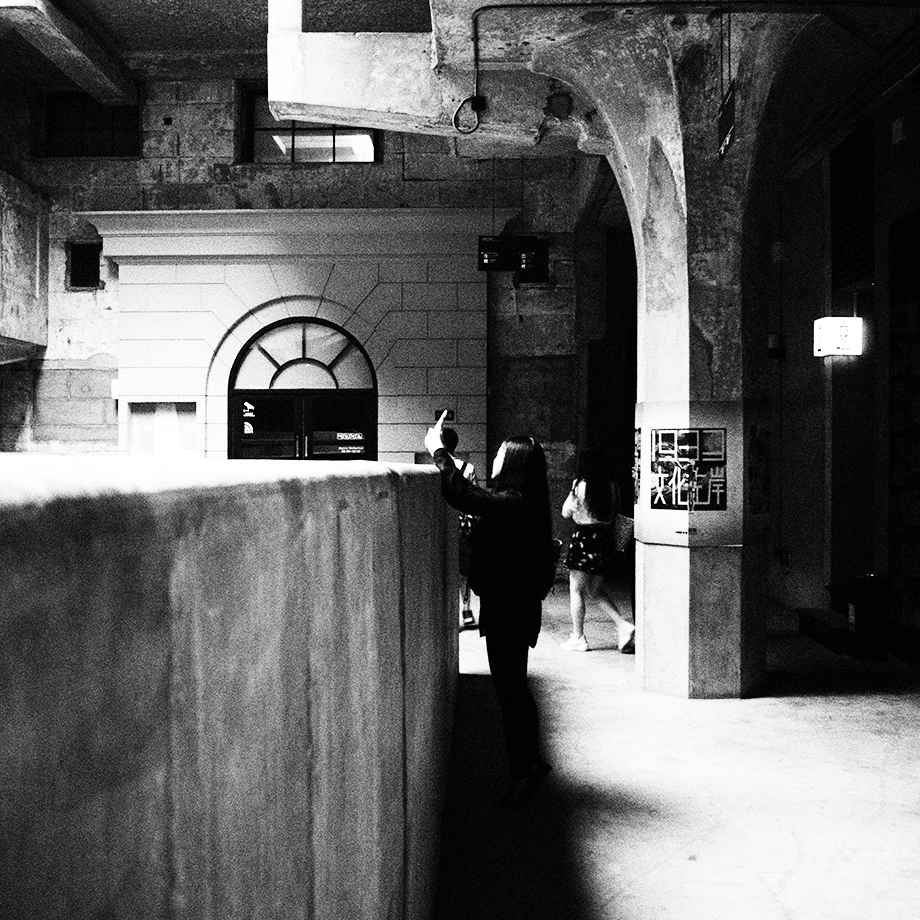
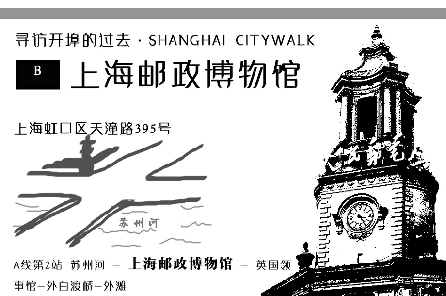

包括区别吸引物魅力与特点延伸
1.1城市旅游 and都市旅游
1.2城市是建筑与人性的结合
都市中两者的矛盾加深
2
城市旅游吸引物 Eg：博物馆&交通系统
2.1石库门屋里厢博物馆
 一个近代石库门住房实景，一个20世纪上半叶上海生活的重现，一个生动的博物馆
一个近代石库门住房实景，一个20世纪上半叶上海生活的重现，一个生动的博物馆
一个近代石库门住房实景，一个20世纪上半叶上海生活的重现，一个生动的博物馆



3魅力与特点
3.1从旅游心理学上，旅游动机在城市里的人们更为强烈，需求也更为丰富。需求拉动发展，提高的不仅是客流量，还有魅力的提升。
4 Some ideas
4.1大数据的应用@Baidu Maps
4.2标识牌的使用
4.2例子

感谢 大家 的 聆听 ~
THE END